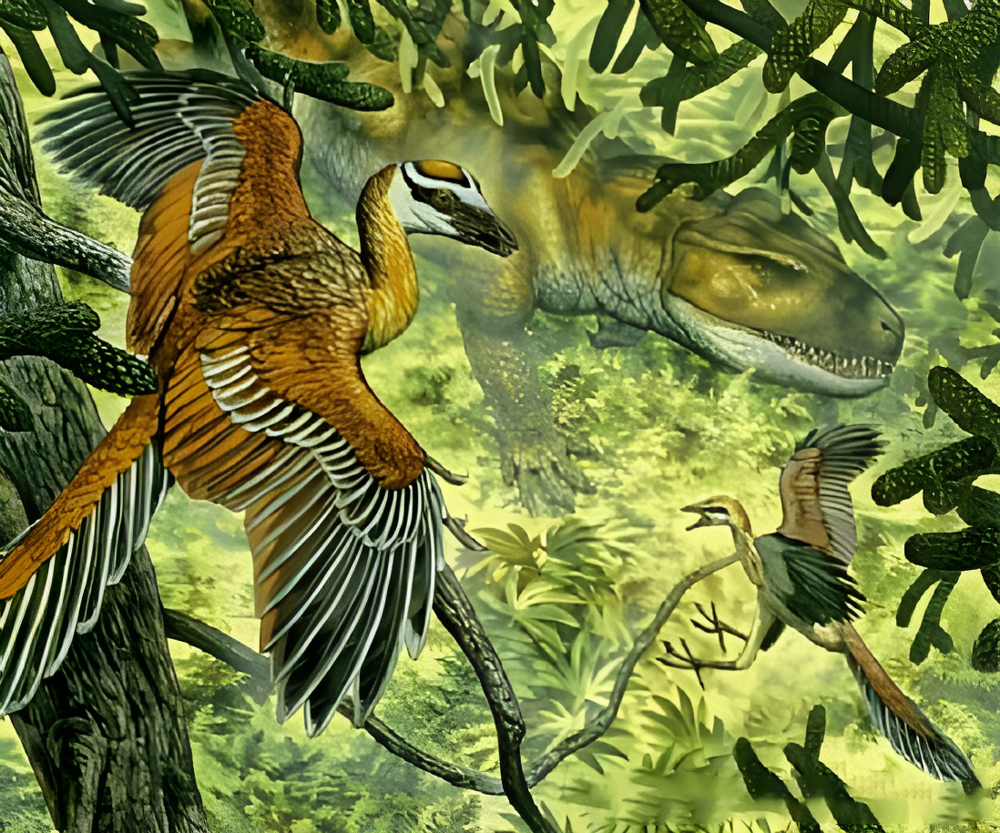
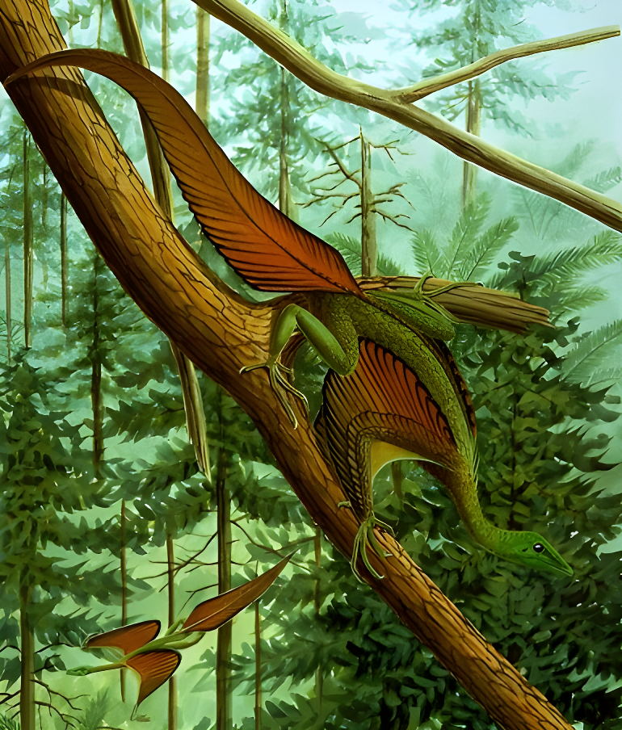
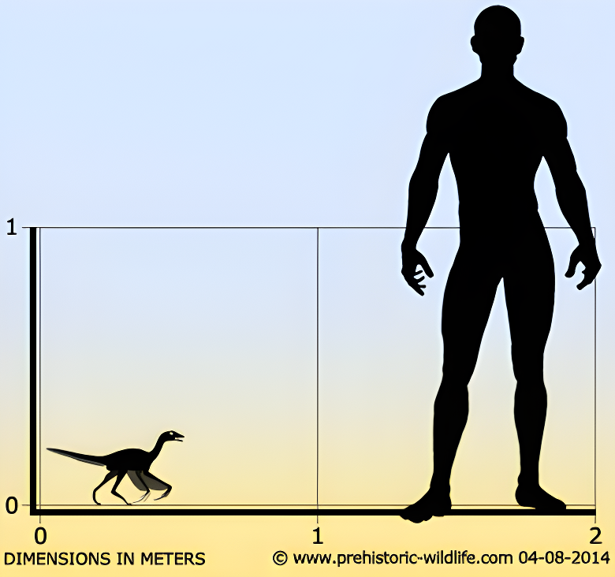
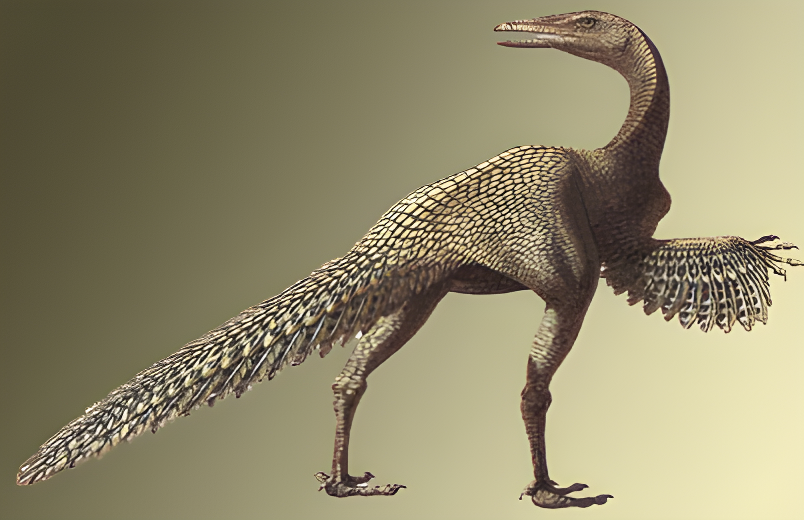
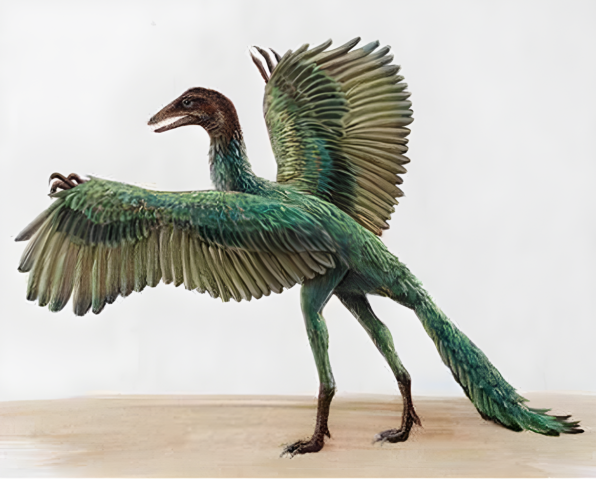
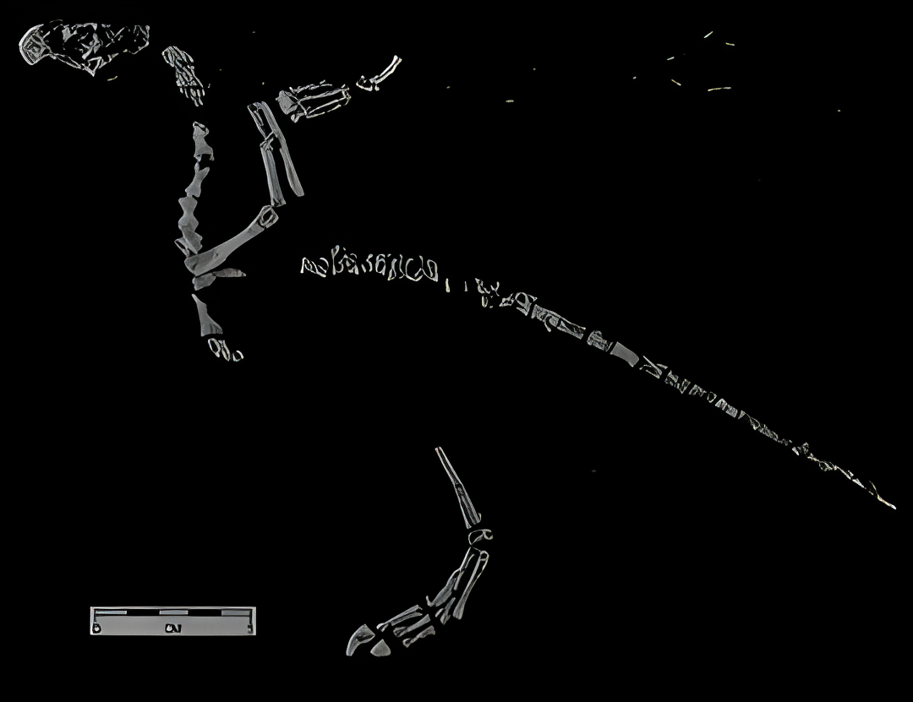

Protoavis
Chim đầu tiên kỷ Tam Điệp
Tổng quan
Kỷ
Triassic
Họ
Protoavidae
Chi
Protoavis
Dài
30 cm
Cao
35 cm
Nặng
3 kg
Thức ăn

Protoavis được cho là một trong những loài khủng long gây tranh cãi nhất, tất nhiên, tranh cãi lớn nhất là liệu Protoavis có thực sự là một loài chim hay không. Chúng sống ở khu vực ngày nay là Texas, Hoa Kỳ vào cuối kỷ Trias, trong khoảng 225 đến 213 triệu năm trước.
Nguồn: wikipedia.org
Phân bố
Khu vực Bắc Mỹ
Thông tin thêm về Protoavis
Kỷ nguyên
Protoavis là một loài khủng long cổ đại đã tuyệt chủng đến từ quốc gia ngày nay là Hoa Kỳ ở lục địa Bắc Mỹ. Thuộc về kỷ Trias muộn, nó được cho là đã sống trên trái đất khoảng 213 triệu năm trước. Trias muộn là kỷ cuối cùng trong ba kỷ Trias. Ba giai đoạn Carnian, Norian và Rhaetian cùng nhau tạo thành giai đoạn Thượng hoặc Trias muộn.
Tên khoa học
Sinh vật này được đặt tên là Protoavis - “con chim đầu tiên”, ngụ ý rằng sinh vật này rất có thể là sinh vật đầu tiên trong số các sinh vật sống có khả năng bay.
Kích thước
Protoavis được cho là một sinh vật nhỏ, đi bằng hai chân. Nó được cho là có chiều dài khoảng 30 cm và chiều cao tới khoảng 35 cm. Trọng lượng ước tính của sinh vật này vào khoảng 2-3 kg. Nếu lý thuyết về loài chim bị cho là không hợp lệ, các nhà cổ sinh vật học cho rằng Protoavis trên thực tế sẽ thuộc họ theropod hoặc khủng long khủng long.
Ngoại hình
Protoavis đã được coi là một trong những sinh vật gia cầm sớm nhất, thậm chí trước cả những gì thường được coi là tổ tiên của loài chim: Archaeopteryx. Điều này là do các hóa thạch đã được tìm thấy cho đến nay cho thấy một số đặc điểm mạnh mẽ của loài chim. Chúng bao gồm sự hiện diện của một cái mỏ giống như miệng. Ngoài ra còn có sự hiện diện của các núm lông vũ được tranh cãi nhiều, các điểm gắn lông vũ vào xương.
Các nhà khoa học tuyên bố rằng các cấu trúc hiển thị trên đai vai của sinh vật thực sự là các núm bút lông. Mặc dù vậy, xương đùi của sinh vật hoàn toàn sống trên cạn. Bàn tay chứa năm chữ số, đây là một đặc điểm cho đến nay chưa từng thấy ở chim hoặc các sinh vật trên không khác. Đôi mắt nằm ở phía trước của đầu.
Chế độ ăn và săn mồi
Mặc dù tồn tại sớm hơn Archaeopteryx rất nhiều, nhưng cấu trúc bộ xương của nó giống loài chim hơn. Sinh vật nguyên sinh Protoavis này đã được tái tạo thành một loài chim ăn thịt có răng ở đầu hàm và mắt nằm ở phía trước hộp sọ, cho thấy lối sống săn mồi về đêm.
Khám phá
Hóa thạch Protoavis đầu tiên được tìm thấy ở phía tây nam của Hoa Kỳ, gần Post ở bang Texas. Các hóa thạch được tìm thấy trong nhóm Dockum. Phát hiện này được ghi công cho Sankar Chatterjee, người cùng với các sinh viên của mình đã phát hiện ra các hóa thạch vào năm 1973.
Các hóa thạch bị phong hóa và nghiền nát do các tác động thời tiết nghiêm trọng. Mẫu vật định danh được đánh số TTU P 9200. Một mẫu vật hóa thạch khác, hiện nay là mẫu vật TTU P 9201 đã được phát hiện từ cùng sự hình thành với mẫu định danh. Hai người này được đặt tại Đại học Công nghệ Texas.